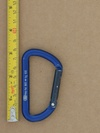
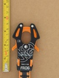
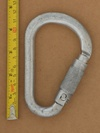
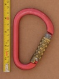

| Image | Summary | ||||
|---|---|---|---|---|---|
 | KONG Helium (bentgate) | asymmetric D | n/a | n/a | lightweight micro carabiner |
|  | KONG Mini D | asymmetric D | n/a | n/a | quality rated keylock accessory carabiner |
 | KONG Ovalone Twistlock | offset oval | full-auto | twist | industrial rope access carabiner, part of a manufacturered back-up system |
 | Kong (Offset Oval Screwlock) (Patent Gate Stamp) | offset oval | manual | gate stopped - thread runout | late 90's keylock oval |
 | Kong (Offset Oval Screwlock) (Patent Spine Stamp) | offset oval | manual | gate stopped - thread runout | late 90's keylock oval |
 | Kong Ergo Open Latch | S-spine | n/a | n/a | gate hold open & lock-under-load features |
|  | Kong FROG MY 2021 | fork | assisted | multi-gate | push to clip multi-gate mechanism |
 | Kong FROG 360 | fork | assisted | multi-gate | push to clip multi-gate mechanism, textile friendly swivel |
 | Kong FrOG (EXPERIMENT) | fork | assisted | multi-gate | push to clip multi-gate mechanism, developmental pre-production experiment |
|  | Kong HMS (Autoblock) | HMS | full-auto | lift-and-twist | keylock autolocker with dot peened Kong logo |
|  | Kong HMS 786 (VN) | HMS | full-auto | twist-lift-twist | quad lock, brass locking sleeve |